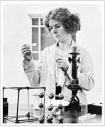
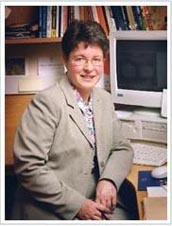
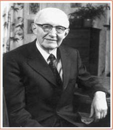

Time Line of Discovery
From the time of Robert Boyle, Ireland has contributed much to the advancement of knowledge in the sciences, and to development of the scientific method
The following is a selection of what we consider some key events
-
In 1661, Robert Boyle (1627-1791)
published the Sceptical Chymist,
where he proposed that testing theory against the world of experience was the ultimate arbiter
of the scientific method.

Kathleen Lonsdale
- Francis Beaufort (1774-1857), from Navan in County Meath, was a hydrographer in the Royal Navy and created the Beaufort Scale for measuring wind force.
- William Parsons (1800-1867), the Third Earl of Rosse) spent his formative years at Birr Castle in Co. Offaly. In 1845 he built the largest telescope in the world at Birr, and made fundamental contributions to Astronomy.
- George Boole (1815-1864), although born in England, was the first Professor of Mathematics at what is now UCC. He is best known for developing Boolean algebra.
- William Rowan Hamilton (1805-1864) was born in Dublin and became Professor of Astronomy at TCD. Among many achievements, he invented quanternions, which are important in modern computer graphic systems. His famous quaternion equation, i² = j² = k² = -1 is carved on Brougham Bridge.
- John Tyndall (1820-1893) was born in County Carlow and became a 19th century scientist of the highest rank. Among many achievements, he was the first to explain how scattering of light in the atmosphere causes the sky to be blue. The Tyndall effect is called after him.
-
George Johnstone Stoney (1826-1911)
was born in DunLaoire and became Professor of Natural Philosophy at
what is now UCC. He coined the word ‘electron’ for the fundamental particle of charge.

Jocelyn Burnell
- J.D. Bernal (1901-1971) was born in Nenagh, Co. Tipperary. He is considered a pioneer in the development of X-ray crystallography of proteins. Most of his work was done at Birbeck College, London.
- Ernest Walton (1903-1997) shared the 1951 Nobel prize with John Cockcroft for their work in splitting of the atom.
- Kathleen Lonsdale (1903-1971) was born in Newbridge, Co. Kildare. While Professor of Chemistry at University College, London. She first demonstration that the benzene ring is flat. She was the first woman member of the Royal Society.
- Jocelyn Bell Burnell (1943-) was born in Lurgan, Co. Armagh and is acknowledged as the discoverer of pulsars. Controversally, she did not share the 1974 Nobel prize in Physics with her Ph.D supervisor Anthony Hewish.
SlideShow
The following is a slideshow of some famous Irish scientists.
- 